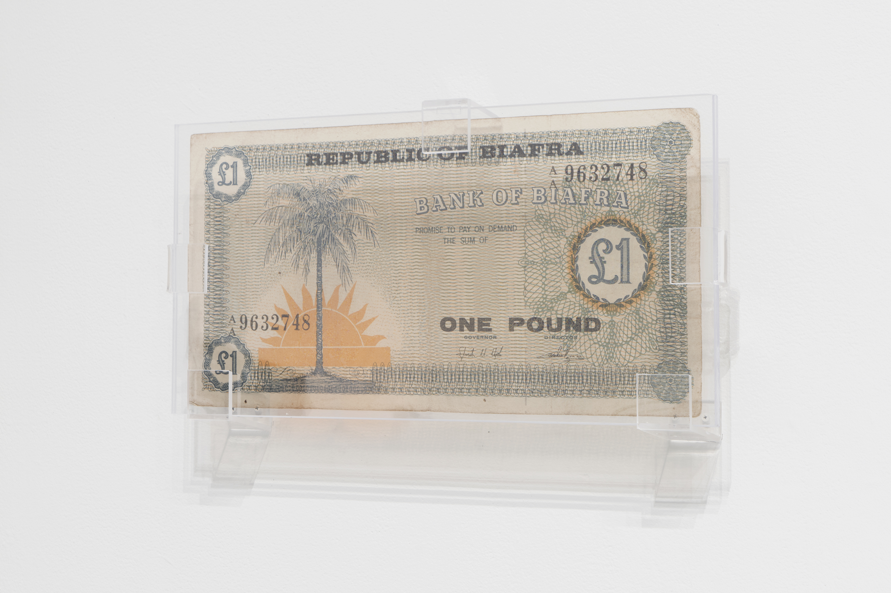
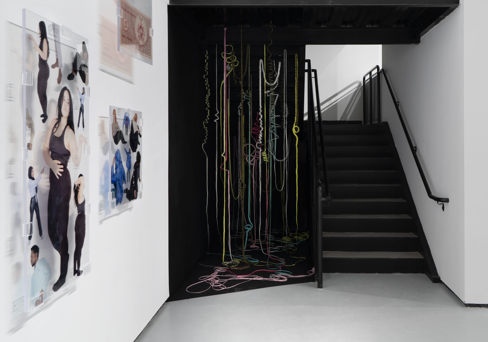
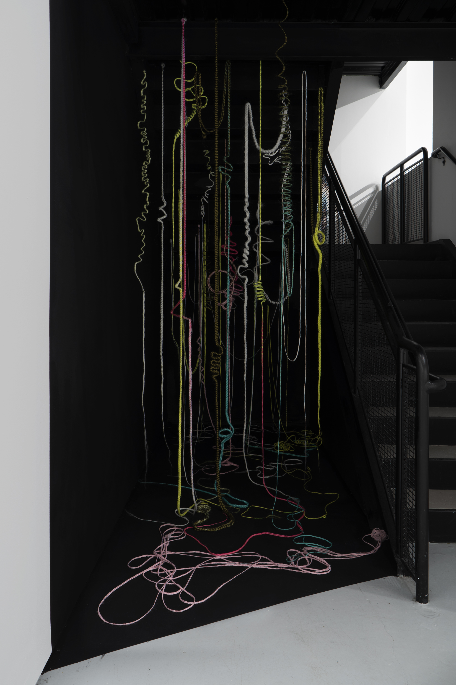

Installation view at Yale School of Art, 2022. Come Celebrate With Me 1–4 & b0b 1–2, 2022, acrylic, vinyl, We’ve.

Installation view at Yale School of Art, 2022. Come Celebrate With Me 1–4 & b0b 1–2, 2022, acrylic, vinyl.
Installation view at Yale School of Art, 2022. b0b 1, 2022, acrylic, vinyl.

Installation view at Yale School of Art, 2022. Come Celebrate With Me 4, 2022, acrylic, vinyl.
Installation view at Yale School of Art, 2022. Come Celebrate With Me 3–4, 2022, acrylic, vinyl, We’ve, Kanekalon, wire.
An Introduction to Chinaedu E. Nwadibia
Delving into the complexities and beauty of the African Diaspora, contemporary photographer Chinaedu E. Nwadibia, explores issues of nationalism, spirituality, gender and identity in her work. Displaying tenderness and care with respect to her subjects, Nwadibia’s portraits and still-lifes embrace challenging historical narratives, producing provocative imagery luring the viewer into her photography through vivid color. Navigating both her African American and Nigerian heritage through her practice, she seeks to expose and understand the vacillating yet poetic collision of cultures.
In Sister Gaze: The Instant Archive (2020), Nwadibia's first solo exhibition, intimate polaroid portraits of Black women painted the walls. Presenting glimpses of women in front of their businesses or taking a break from their day to day work, places focus on Black femininity and the desire to prioritize rest and calm within a community often subjugated. Subverting the patriarchal and racialized “male gaze”, the array of Black female bodies within the exhibition extended agency in an all encompassing way as Nwadibia’s images offer spaces of repose and reflection, in small graceful nuances. Celebrating the essential nature and the act of depicting Black women through the arts, literature and entertainment, as full beings, the ethos of sister gaze emerges.
Nwadibia’s practice while attending Yale School of Art is an evolution of her earlier pieces as the artist refines her stylistic approach in conjunction with layering her ancestry. Guided by curiosity, the artist's archival inkjet prints deconstruct and question cultural and gender identity, and the ripple effects of colonialism. Her body of work, GUANGZHO ←→ LAGOS (2020), examines globalization and labor justice, cultural appropriation and economic inequality, and femininity within luxury branding. Exposing discomforting realities around European imperialism while simultaneously presenting mesmerizing African textiles, the artist presents the artificial construction of representation.
As Nwadibia continues to investigate, create, and elevate, her work will continue to reveal the interconnectedness of relationships, tapping into an enriching system of diversity.